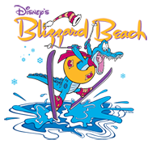

Roteiros dos parques

Blizzard Beach

O Blizzard Beach é o meu parque aquático preferido em Orlando. Inaugurado em 1995, ele é o parque aquático mais novo da Disney World ainda em funcionamento e por ser menor que o irmão Typhoon Lagoon, eu acho que ele reserva um clima muito mais tranquilo que os outros parques aquáticos da cidade. É o parque perfeito para tirar férias no meio das suas férias!
Atmosfera
A lenda que é tema do parque é a seguinte: em uma área desconhecida da Flórida, havia nevascas recorrentes que levaram a construção de um parque de esqui. Por se localizar em um estado onde faz muito calor na maior parte do ano, a neve eventualmente derreteu deixando as pistas de esqui e um teleférico abandonados. Um dia um grupo de pessoas passando por ali, viu um crocodilo (animal símbolo da Flórida e mascote do parque) escorregando no que antes devia ser uma pista de esqui, e decidiram de lá um parque aquático, dando origem ao Blizzard Beach.
Dando apoio à historinha criada pela Disney, o parque revela uma atmosfera muito diferente da paisagem de Orlando, com montanhas cobertas de neve e os chalés de madeira típicos das estações de esqui.
O Blizzard Beach fica aberto todos os anos entre o começo de Abril e o final de Dezembro. Entre Janeiro e Março, o parque fecha para manutenção enquanto o Typhoon Lagoon continua aberto para visitação.
A água das piscinas do parque é levemente aquecida (em torno dos 27ºC) com exceção a água do Cross Country Creek, que na lenda do parque é a água que vem da neve derretida. Isso significa que é tranquilo ir no parque nos dias mais frios? Não necessariamente, pois além da água não ser quente no nível de águas termais, eu sempre penso como deve ser difícil sair das piscinas e encarar o vento frio e gelado de Orlando em Dezembro. Mas como eu sempre digo: vá por sua conta em risco.
Alimentação
Existem 7 lanchonetes e trailers dentro do Blizzard Beach para você comer durante o dia e são váras as opções para todos os gostos: desde os tradicionais cheeseburguer, pizza, hot dog até saladas e pratos mais lights como wraps. O legal é que espalhados ao redor do parque, você encontra placas com os cardápios de todos os locais para poder escolher e não ficar caçando as comidas por ai.
No Blizzard Beach você também encontra canecas que dão direito a refill de refrigerante por todo o parque durante o dia inteiro. Por US$9,99 você compra a caneca, pode recarregar com refri quantas vezes quiser e depois leva pra cada como lembrança.
Aluguel: toalhas, armários e cabanas
Como é de praxe em todos os parques aquáticos, no Blizzard Beach você pode alugar toalhas e armários para deixar os seus pertences. São dois locais para locação, a The Beach Haus, que é a loja principal do parque e costuma ficar sem filas, e a Snowless Joe’s que fica ao lado dos armários e vestiários e por isso, fica sempre lotada de gente.
Em Julho/2014, o aluguel da toalha saía por US$2, o do armário grande por US$10 e do pequeno por US$8, isso para o dia todo. Além disso, para os armários você precisa deixar um caução de US$5 que é devolvido quando você entregar a chave de volta no final do dia. Vale dizer que se você for para o Typhoon Lagoon no mesmo dia, não é preciso pagar o armário de novo: basta mostrar o recibo do aluguel no Blizzard Beach, deixar o depósito de $5 e pegar uma nova chave.
Dica: eu sempre levo uma toalha do hotel que estou ficando (e claro levo de volta!) para não precisar alugar toalha no parque.
Para quem procura um ambiente mais privativo para passar o dia, o Blizzard Beach aluga cabanas, chamadas de Polar Patios, para até 6 pessoas que incluí armários, toalhas, água e um serviço de garçon que serve comidas compradas separadamente. O aluguel custa entre US$215 e US$315 para o grupo e pessoas adicionais podem ser incluídas por US$25 cada.
Ingresso
Para entrar no Blizzard Beach você precisa ter um ingresso base para os parques da Disney com a opção Water Park Fun and More (WPFM), como explicamos aqui. Para quem não vai para os outros parques da Disney, os ingressos só para o Blizzard Beach podem ser comprados na entrada por $56.45 por adulto ou $47.93 para crianças de 3-9 anos (preços com imposto de julho/2014) ou no site da Disney. Crianças até 3 anos entram sem pagar.
Localização, estacionamento e horários
O Blizzard Beach fica entre o Disney’s Hollywood Studios e os hotéis Disney’s All Star, e ao contrário do que ocorre nos parques temáticos, o estacionamento é gratuito. Apesar de ser um estacionamento pequeno, aconselho que chegue cedo para não acabar parando o carro muito longe da entrada. O endereço para quem estiver com GPS é: 1534 Blizzard Beach Dr, Lake Buena Vista, FL 32830.
Além disso, se você estiver hospedado em um hotel da Disney ou estiver indo para o Blizzard Beach de algum outro parque do complexo, pode usar os ônibus internos da Disney que também são gratuitos e saem de todos os hotéis e parques do complexo.
O parque funciona quase sempre entre as 10:00 e as 17:00, mas no verão americano, acaba abrindo mais cedo e fechando mais tarde: em geral entre 9:00 e 20:00. Apesar de haver este padrão, os horários podem variar eventualmente então aconselho que consulte o horário programado para o dia da sua visita pelo site da Disney como ensinamos aqui.
O mapa do Blizzard Beach
O parque está dividido em três regiões principais, chamadas de slopes, ou algo como “encosta” se fossemos traduzir para o português. São elas o Green Slope, Purple Slope e Red Slope. Além disso, outras atrações ficam no “térreo” do parque, onde as atrações que começam no alto dos slopes, terminam.
Clique aqui para abrir o mapa do Blizzard Beach enquanto lê o roteiro.
;){kind=link}
GREEN SLOPES
– Summit Plummet: esse é o toboágua mais importante do parque. Com mais de 36 metros de altura, o Summit Plummet é bem radical e confesso que me deu um frio na barriga antes de despencar dali. Ele é tão alto, que uma pessoa pode chegar a 97 km/h ao escorregar nesse toboágua. Para os curiosos, esse é o segundo mais rápido e alto toboágua do mundo, só perdendo para o “Insano” que fica no Beach Park em Fortaleza. Eu gosto dele e recomendo para os corajosos.
– Teamboat Springs: esse é pra família toda! No Teamboat Springs, você e todo o seu grupo entra em uma bóia gigante e despenca por uma montanha cheia de curvas. Na bóia cabem até 6 pessoas (e deve ter no mínimo 4) e todos seguram em alças que ficam instaladas no fundo dela. O passeio é tranquilo e sem fortes emoções.
PURPLE SLOPES
– Downhill Double Dipper: esse toboágua é divertido pois é uma competição lado a lado com outra pessoa. Eles medem o tempo em que você demora pra descer e chegar na piscina lá embaixo. Apesar da competição não é um toboágua com muita adrenalina não.
– Snow Stormers: esse é um toboágua cheio de curvas em que você deita em um tapetinho e despenca montanha abaixo. Prepare-se pra levar muita água na cara e sem dúvida, sentir frio na barriga. Ele me lembra muito as pistas das competições de bobsleigh, aquele esporte de trenó de gelo, do filme Jamaica Abaixo de Zero. Não que eu tenha experiência com esse esporte, né? hehehe
– Toboggan Racers: outra atração de competição, no Toboggan Racers 8 toboáguas ficam lado a lado e as pessoas se alinham e despencam usando os mesmos tapetinhos do Snow Stormers. Como não existe um controle muito cerrado, nunca dá pra saber quem ganhou porque as pessoas acabam saindo em momentos diferentes. Mas pra quem tiver em um grupo grande dá pra se divertir.
RED SLOPE
– Runoff Rapids: localizado bem nos fundos do Blizzard Beach o Runoff Rapids é um conjunto de toboáguas abertos e fechados onde você pode descer em bóias com uma ou duas pessoas. Ele desce bem rapidamente e apesar de ser curtinho (na minha opinião), dá pra aproveitar o frio na barriga provocado pelas curvas acentuadas. Cada um dos escorregadores tem um percurso diferente, então se você gostar, vale a pena ir de novo para conhecer os outros caminhos.
OUTRAS ATRAÇÕES
– Melt-Away Bay: piscina de ondas que fica na base da montanha principal do parque. Ela é bem tranquila e da pra passar boas horas ali curtindo o “balanço do mar” 
– Cross Country Creek: o tradicional rio de correnteza, tem um leve movimento que empurra as pessoas ao redor de todo o perímetro do parque. Você pode entrar e sair em 7 pontos e só é permitido ficar ali dentro com as bóias, que você pega gratuitamente ao entrar na piscina. Eu deito ali e se deixar, durmo boiando pelo parque.
– Ski Patrol: aqui é o playground para crianças de até 12 anos. É composto por algumas pequenas atrações
Leisure Pool – são icebergs flutuantes que as crianças podem andar (e cair na piscina, que deve ser a parte mais legal).
Fahrenheit Drops – a famosa tiroleza para as crianças despecarem e depois se jogarem na piscina.
Freezin’ Pipe Springs – toboágua pequenininho e fechado que desemboca na mesma piscina da tiroleza.
Cool Runners – toboágua um pouco maior para as crianças mais “radicais”.
– Tike’s Peak: um conjunto de pequenos escorregadores para as crianças menores se divertirem junto com seus pais
– The Chairlift: mais um meio de transporte do que uma atração em si, o teleférico é usado para se chegar mais rápido no topo do Green Slopes e leva até 3 pessoas por banquinho. Não se pode subir com nenhum objeto solto (toalha, câmera…). Para quem quer chegar no topo da montanha mas não quer usar o teleférico, existe uma escada que também leva ao Green Slopes.